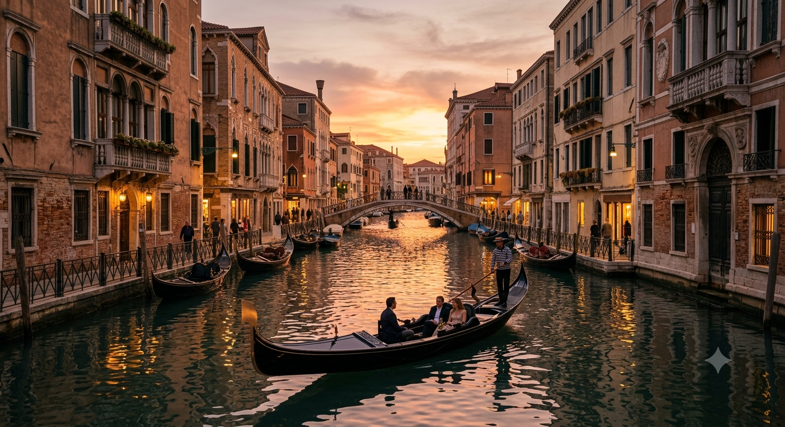
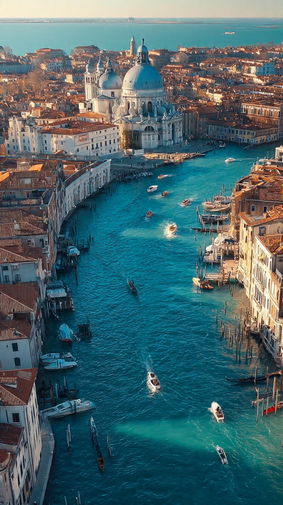

```html id="4xqj8v"
مدينة كاملة مبنية فوق الماء قبل مئات السنين | قصص تاريخية
```
من بعيد، تبدو المدينة وكأنها تطفو فوق سطح الماء.
لا توجد شوارع واسعة تعبرها السيارات.
ولا تسمع صوت المحركات أو إشارات المرور.
بدلًا من ذلك، تمتد القنوات المائية بين المباني، وتعبرها القوارب في هدوء.
إنها مدينة البندقية (فينيسيا)، واحدة من أكثر المدن غرابة وإبهارًا في العالم.
تقع البندقية في شمال إيطاليا، وتتكون من أكثر من مئة جزيرة صغيرة ترتبط فيما بينها بجسور عديدة.
وعلى الرغم من أن المدينة تبدو اليوم مقصدًا سياحيًا شهيرًا، فإن بدايتها كانت مختلفة تمامًا.
ففي القرن الخامس الميلادي، تعرضت مناطق كثيرة من شمال إيطاليا لغزوات متكررة، مما دفع آلاف السكان إلى الفرار من البر الرئيسي.
بحث الناس عن مكان يصعب على الجيوش الوصول إليه، فوجدوا ملاذهم بين الجزر الضحلة في البحيرة.
بدأ السكان يبنون منازلهم فوق تلك الجزر الصغيرة.
لكن الأرض كانت رخوة ومشبعة بالمياه.
ولذلك ابتكروا طريقة هندسية مدهشة.
فقد غرسوا آلاف الأعمدة الخشبية الطويلة في قاع البحيرة، ثم أقاموا فوقها الأساسات الحجرية للمباني.
وبمرور الوقت، أصبحت هذه الأعمدة أكثر صلابة بسبب بقائها مغمورة بالماء وقلة تعرضها للأكسجين، مما ساعد على بقائها قرونًا طويلة.
ومع ازدياد عدد السكان، تحولت المستوطنة الصغيرة إلى مدينة مزدهرة.
أُنشئت الجسور، وشُقت القنوات المائية، وازدهرت التجارة مع الشرق والغرب.
وأصبحت البندقية واحدة من أغنى المدن في أوروبا خلال العصور الوسطى.
لكن...
كيف استطاعت مدينة مبنية فوق الماء أن تتحول إلى قوة بحرية وتجارية هائلة؟
هذا ما سنعرفه في الجزء الثاني.
📷 الصورة رقم 1

مع مرور القرون، لم تعد البندقية مجرد مجموعة من الجزر الصغيرة.
بل تحولت إلى واحدة من أقوى الجمهوريات البحرية في أوروبا.
وكان موقعها المميز في البحر الأدرياتيكي يمنحها فرصة مثالية للتجارة بين أوروبا والشرق الأوسط وشمال إفريقيا.
فكانت السفن تصل إليها محملة بالتوابل، والحرير، والعطور، والأقمشة، والأحجار الكريمة، ثم تُنقل هذه البضائع إلى أنحاء القارة الأوروبية.
وأصبح أسطول البندقية من أقوى الأساطيل البحرية في عصره.
فقد امتلكت المدينة ترسانة ضخمة لبناء السفن عُرفت باسم "الأرسنال"، وكانت تُعد من أكبر مراكز صناعة السفن في العالم آنذاك.
ويذكر المؤرخون أن العمال كانوا قادرين على إنتاج السفن بسرعة كبيرة مقارنة بمعايير ذلك الزمن، وهو ما منح المدينة قوة تجارية وعسكرية هائلة.
ولم يكن ازدهار البندقية قائمًا على التجارة فقط.
فقد أصبحت أيضًا مركزًا للفنون والعمارة والثقافة.
وشُيدت فيها القصور الفخمة، والكنائس المزخرفة، والساحات الواسعة التي ما زالت تجذب ملايين الزوار حتى اليوم.
وكانت القنوات المائية تؤدي دور الشوارع، بينما أصبحت القوارب وسيلة النقل الرئيسية داخل المدينة.
ولهذا اكتسبت البندقية شهرتها بوصفها "المدينة العائمة".
لكن مع مرور الزمن، بدأت المدينة تواجه تحديات كبيرة.
فمستوى سطح البحر يرتفع تدريجيًا، كما تتعرض البندقية لظاهرة المد المرتفع التي تؤدي إلى غمر أجزاء منها بالمياه في بعض الفترات.
ولهذا يعمل المهندسون اليوم على تنفيذ مشروعات لحماية المدينة والحفاظ عليها للأجيال القادمة.
فهل ستبقى البندقية صامدة أمام تحديات الطبيعة؟
وكيف يحاول العالم إنقاذ هذه المدينة التاريخية؟
هذا ما سنعرفه في الجزء الثالث والأخير.
📷 الصورة رقم 2

اليوم، تُعد البندقية واحدة من أشهر المدن التاريخية في العالم، ويزورها ملايين السياح كل عام للاستمتاع بقنواتها المائية وجسورها وقصورها العريقة.
وقد أدرجتها منظمة اليونسكو ضمن مواقع التراث العالمي، تقديرًا لقيمتها التاريخية والمعمارية الفريدة.
فهي ليست مجرد مدينة جميلة، بل شاهد حي على قدرة الإنسان على التكيف مع البيئة وبناء حضارة مزدهرة في مكان كان يبدو غير مناسب للحياة.
ورغم جمالها، تواجه البندقية تحديات حقيقية.
فالمدينة تعاني من ظاهرة تُعرف باسم "المد المرتفع"، حيث ترتفع مياه البحر في بعض الأيام لتغمر الساحات والشوارع.
كما أن ارتفاع مستوى سطح البحر والتغيرات المناخية يزيدان من صعوبة الحفاظ عليها.
ولهذا أطلقت إيطاليا مشروعًا هندسيًا ضخمًا يُعرف باسم مشروع MOSE، وهو نظام من الحواجز المتحركة صُمم للمساعدة في حماية المدينة من الفيضانات عندما ترتفع المياه بشكل كبير.
ومع ذلك، يؤكد الخبراء أن حماية البندقية ليست مسؤولية إيطاليا وحدها، بل مسؤولية العالم كله.
فالمدينة تمثل جزءًا مهمًا من التراث الإنساني، وتحمل بين مبانيها وجسورها وقنواتها قرونًا من التاريخ والفنون والثقافة.
ولهذا تستمر أعمال الصيانة والترميم للحفاظ على هذا الإرث الفريد.
إن قصة البندقية تثبت أن الإنسان يستطيع تحويل أصعب البيئات إلى أماكن نابضة بالحياة.
فمن جزر صغيرة وسط المياه، نشأت مدينة أصبحت رمزًا للتجارة والفن والهندسة، وما زالت حتى اليوم تبهر كل من يزورها.
ولهذا ستبقى البندقية واحدة من أعظم المدن التاريخية في العالم، ودليلًا على أن الإبداع يمكنه أن يتغلب حتى على تحديات الطبيعة.
🌊🏛️ انتهت القصة 🏛️🌊